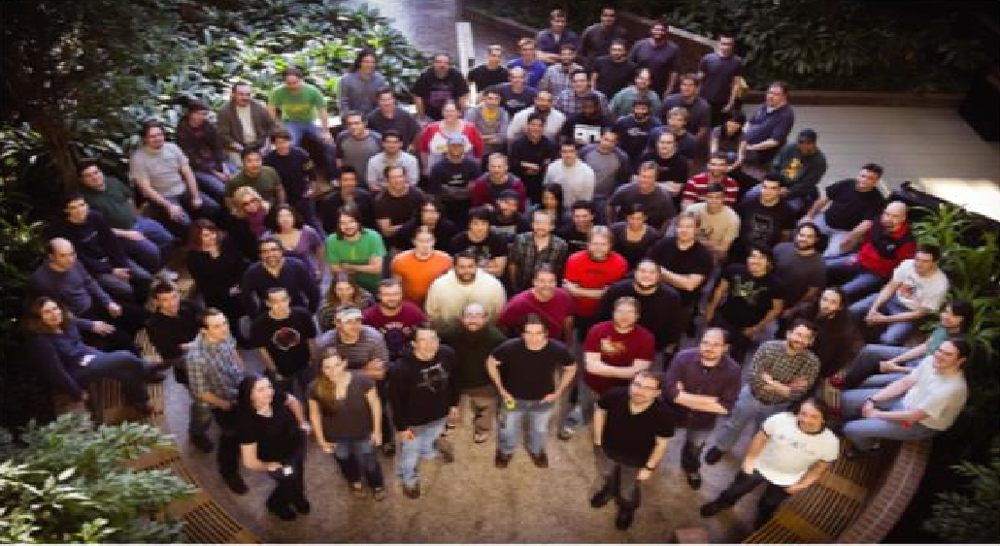

Quelles sont les étapes de création d'un jeu vidéo ?
Pendant la phase de conceptualisation, le créateur va réfléchir à quoi va ressembler le jeu dans sa globalité, cela commence par le type du jeu.
Le genre du jeu, c'est à dire Science-Fiction, Fantaisie, Réaliste, etc...
C'est ici que l'histoire du jeu va commencer à se tracer...
Tout les jeux aujourd'hui ont un contexte ou une histoire.
Ici, le créateur est libre de ses choix ! La seule limite est son imagination.
Aujourd'hui, un bon jeu va se faire remarquer par son gameplay ou son histoire.
Le créateur devra bien cadrer ses idées et rester réaliste.
Voici l'équipe derrière un gros jeu, Skyrim.
Il faut bien se rendre compte qu'une personne seul dans sa chambre ne pourra pas créer un jeu à l'envergure de Skyrim
Dès que le créateur a une idée bien cernée du jeu, il devra décomposer les différentes tâches à réaliser.
C'est une étape très importante pour mener à bien un projet. Chaques tâches décomposé devra être attribuer à plusieurs membres de l'équipe de développement. Cette étape n'est évidemment pas suivie par un créateur seul.